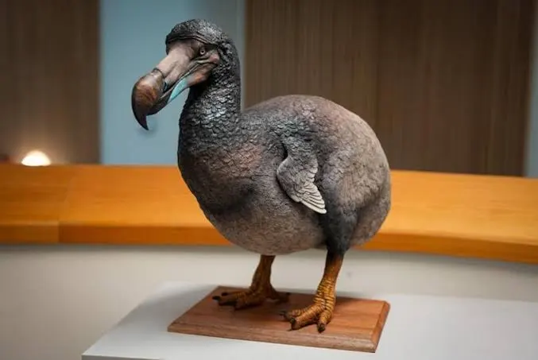

გადაშენებული ფრინველი. მის შესახებ პირველი ინფორმაცია 1681 წლიდან მოგვეპოვება. როგორც ირკვევა, მისი სამშობლო ინდოეთის ოკეანეში მდებარე კუნძული მავრიკი იყო. ზრდასრული დოდო 20-25 კგ იწონიდა, ხოლო სიმაღლე ერთ მეტრს აღწევდა. მას ჰქონდა მასიური ნისკარტი და დიდი თვალები. დოდოს ფრთები მძიმე იყო. მისი მკერდით თუ ვიმსჯელებთ, მას ფრენა არ შეეძლო, რადგანაც ჰქონდა სუსტი მკერდის ძვალი და მის წონას ფრენის დროს ვერ გაუძლებდა.მეცნიერები ფიქრობენ, რომ დოდო წარმოიშვა ისეთი ფრინველისგან, რომელსაც ფრენა შეეძლო.
მეცნიერების ვარაუდით დოდო ისეთ ადგილას დასახლდა, სადაც არ იყო მტერი და ადვილად მოიპოვებოდა საკვები. ამის გამო ისინი არ იწუხებდნენ თავს ფრენისთვის, რის შედეგადაც დოდოებმა ფრენის უნარი დაკარგეს. დოდო სახელი წარმოიშვა „დოუდოსგან“, რაც ესპანურად სულელს ნიშნავს. დოდო გადაშენდა მას შემდეგ, რაც მეკობრეებმა კუნძულზე კატები და სხვა შინაური ცხოველები შემოიყვანეს. მასზე ნადირობდნენ ადამიანებიც, რადგან მისი ხორცი ძალიან გემრიელი იყო. ის მხოლოდ ერთ კვერცხს დებდა, რამაც დააჩქარა მისი გადაშენება.